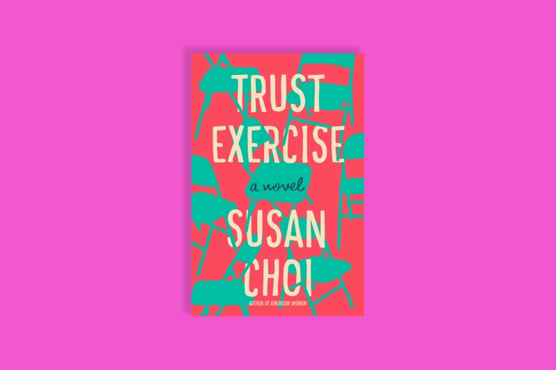
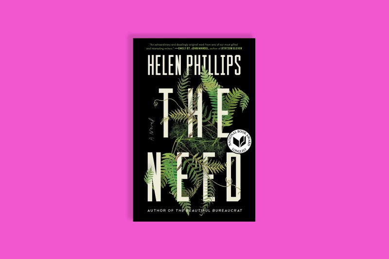

The Best Fictions
The Topeka School, Ben Lerner
The novelist, essayist and poet blends the perspectives of a quick and ruthless
high school debate champion, his psychologist parents and a misfit peer in The
Topeka School, a poignant examination of “toxic masculinity” and its
manifestations in speech. Adam Gordon, a character first introduced as a grown
man and a poet in Lerner’s debut novel Leaving the Atocha Station, is a slick
talker, a chameleon as comfortable dominating his school’s social scene as he is
in his parents’ home. Adam’s winning approach to competition—subjecting his
challengers to “the spread,” where they’re forced to respond to a blast of ideas
at the pace of drinking from a firehose—deftly reflects the demise of civil discourse.

Where Reasons End, Yiyun Li
A devastating story born of real-life heartbreak, Yiyun Li’s Where Reasons End
places a mother in conversation with her son after losing him to suicide. Li
wrote her highly original and deeply affecting novel in the wake of her own
son’s suicide. In the book, the narrator visits with 16-year-old Nikolai in a
liminal world of Li’s creation, somewhere between the realms of the living and
the dead. As the two relive their old ways of being together and speaking to one
another, Li unfolds a moving meditation on the limitations of language—a tool
that is equipped to relay neither life’s most harrowing pain nor its fiercest love.

Trust Exercise, Susan Choi
In the hormone-laden and pressure-fueled world of a performing arts high
school, two acting students get locked in a heady romance—only to be watched,
judged and influenced by their peers and even their drama teacher, a man with
questionable motives. National Book Award winner Susan Choi crafts a visceral
adolescent world rife with tension, sexual and otherwise, and renders the
insecurity that accompanies it with excruciating realism. That is, until she
introduces a shift in perspective midway through the novel that undermines
the veracity of the story. With a boldly unconventional structure, Choi points
to essential truths about power and who gets to control the narrative.

The Need, Helen Phillips
It’s a classic opening: a woman hears an intruder in her home while her
husband is away, grabs her two young kids and hides in terror. But the true
power of Helen Phillips’ brilliantly paced thriller emerges when Molly, a
paleobotanist, comes face to face with the only person in the world who can
shake her identity as a mother—a person who brings her to question her very
reality. Phillips taps into the overwhelming anxiety that comes with love in its
deepest, truest form, a sense of fierce protectiveness one need not be a parent
to understand.

|